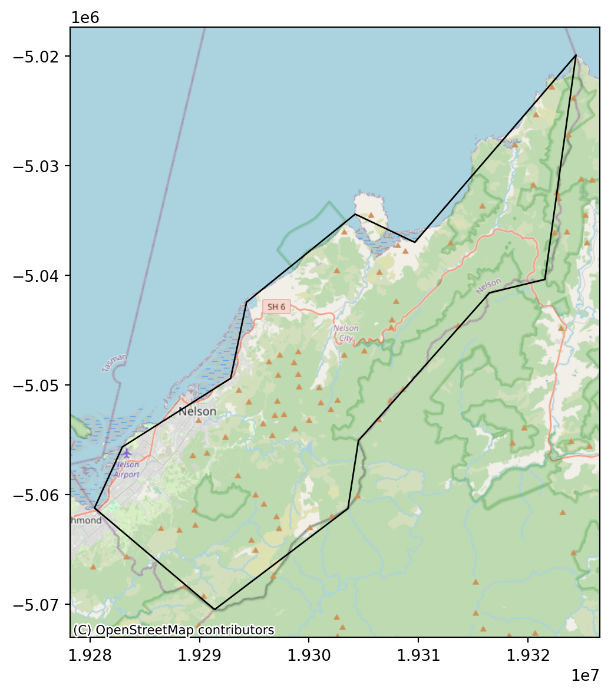
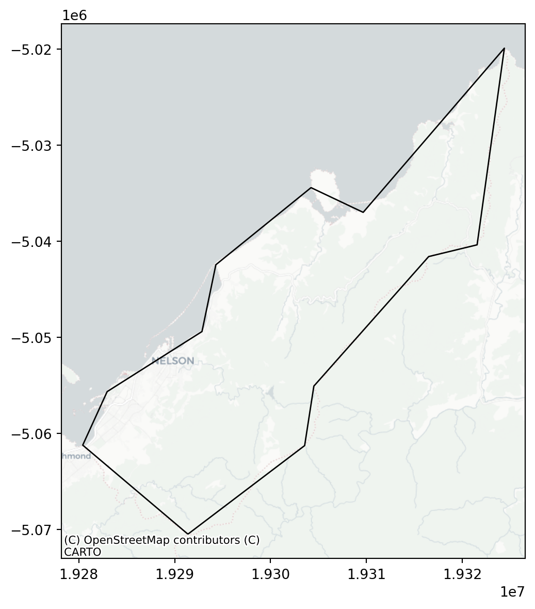

import matplotlib.pyplot as plt
import geopandas as gpd
import rasterio
import rasterio.plot
import contextily as cx
import folium8 Making maps with Python
Prerequisites
This chapter requires importing the following packages:
It also relies on the following data files:
nz = gpd.read_file('data/nz.gpkg')
nz_height = gpd.read_file('data/nz_height.gpkg')
nz_elev = rasterio.open('data/nz_elev.tif')
tanzania = gpd.read_file('data/world.gpkg', where='name_long="Tanzania"')
tanzania_buf = tanzania.to_crs(32736).buffer(50000).to_crs(4326)
tanzania_neigh = gpd.read_file('data/world.gpkg', mask=tanzania_buf)8.1 Introduction
A satisfying and important aspect of geographic research is communicating the results. Map making—the art of cartography—is an ancient skill that involves communication, intuition, and an element of creativity. In addition to being fun and creative, cartography also has important practical applications. A carefully crafted map can be the best way of communicating the results of your work, but poorly designed maps can leave a bad impression. Common design issues include poor placement, size and readability of text and careless selection of colors, as outlined in the style guide of the Journal of Maps. Furthermore, poor map making can hinder the communication of results (Brewer 2015):
Amateur-looking maps can undermine your audience’s ability to understand important information and weaken the presentation of a professional data investigation.
Maps have been used for several thousand years for a wide variety of purposes. Historic examples include maps of buildings and land ownership in the Old Babylonian dynasty more than 3000 years ago and Ptolemy’s world map in his masterpiece Geography nearly 2000 years ago (Talbert 2014).
Map making has historically been an activity undertaken only by, or on behalf of, the elite. This has changed with the emergence of open source mapping software such as mapping packages in Python, R, and other languages, and the “print composer” in QGIS, which enable anyone to make high-quality maps, enabling “citizen science”. Maps are also often the best way to present the findings of geocomputational research in a way that is accessible. Map making is therefore a critical part of geocomputation and its emphasis not only on describing, but also changing the world.
Basic static display of vector layers in Python is done with the .plot method or the rasterio.plot.show function, for vector layers and rasters, as we saw in Sections sec-vector-layers and sec-using-rasterio, respectively. Other, more advanced uses of these methods, were also encountered in subsequent chapters, when demonstrating the various outputs we got. In this chapter, we provide a comprehensive summary of the most useful workflows of these two methods for creating static maps (sec-static-maps). Static maps can be easily shared and viewed (whether digitally or in print), however they can only convey as much information as a static image can. Interactive maps provide much more flexibilty in terms of user experience and amount of information, however they often require more work to design and effectively share. Thus, in sec-interactive-maps, we move on to elaborate on the .explore method for creating interactive maps, which was also briefly introduced earlier in sec-vector-layers.
8.2 Static maps
Static maps are the most common type of visual output from geocomputation. For example, we have been using .plot and rasterio.plot.show throughout the book, to display geopandas and rasterio geocomputation results, respectively. In this section we systematically review and elaborate on the various properties that can be customized when using those functions.
A static map is basically a digital image. When stored in a file, standard formats include .png and .pdf for graphical raster and vector outputs, respectively. Thanks to their simplicity, static maps can be shared in a wide variety of ways: in print, through files sent by e-mail, embedded in documents and web pages, etc.
Nevertheless, there are many aesthetic considerations when making a static map, and there is also a wide variety of ways to create static maps using novel presentation methods. This is the focus of the field of cartography, and beyond the scope of this book.
Let’s move on to the basics of static mapping with Python.
8.2.1 Minimal examples
A vector layer (GeoDataFrame) or a geometry column (GeoSeries) can be displayed using their .plot method (sec-vector-layers). A minimal example of a vector layer map is obtained using .plot with nothing but the defaults (Figure fig-vector-minimal).
nz.plot();
.plot
A rasterio raster file connection, or a numpy ndarray, can be displayed using rasterio.plot.show (sec-using-rasterio). Figure fig-raster-minimal shows a minimal example of a static raster map.
rasterio.plot.show(nz_elev);
rasterio.plot.show
8.2.2 Styling
The most useful visual properties of the geometries, that can be specified in .plot, include color, edgecolor, and markersize (for points) (Figure fig-basic-plot).
nz.plot(color='lightgrey');
nz.plot(color='none', edgecolor='blue');
nz.plot(color='lightgrey', edgecolor='blue');


color and edgecolor in static maps of a vector layer
The next example uses markersize to get larger points (Figure fig-basic-plot-markersize). It also demonstrates how to control the overall figure size, such as \(4 \times 4\) \(in\) in this case, using plt.subplots to initialize the plot and its figsize parameter to specify dimensions.
fig, ax = plt.subplots(figsize=(4,4))
nz_height.plot(markersize=100, ax=ax);
markersize in a static map of a vector layer
Note
As you have probably noticed throughout the book, the plt.subplots function is used to initialize a maptplotlib plot layout, possibly also specifying image size (e.g., Figure fig-basic-plot-markersize) and multi-panel layout (e.g., Figure fig-faceted-map). The returned value is a tuple of Figure and Axes objects, which we conventionally unpack to variables named fig and ax. These two variables represent the entire figure, and the elements of individual sub-figures, respectively.
For our purposes in this book, we have been using just the ax object, passing it to the ax parameter in further function calls, in order to add subsequent layers (e.g., Figure fig-plot-raster-and-vector) or other elements (e.g., Figure fig-plot-symbology-colors-r-scale) into the same panel. In a single-panel figure, we pass ax itself, whereas in a multi-panel figure we pass individual elements representing a specific panel (such as ax[0] or ax[0][0], depending of the layout; see sec-faceted-maps)
Note that in some of the cases we have used an alternative to plt.subplots—we assigned an initial plot into a variable, conventionally named base, similarly passing it to the ax parameter of further calls, e.g., to add subsequent layers (e.g., Figure fig-two-layers); this (shorter) syntax, though, is less general than plt.subplots and not applicable in some of the cases (such as displaying a raster and a vector layer in the same plot, e.g., Figure fig-plot-raster-and-vector).
8.2.3 Symbology
We can set symbology in a .plot using the following parameters:
column—a column namelegend—whether to show a legendcmap—color map, a.k.a. color scale, a palette from which the colors are sampled
For example, Figure fig-plot-symbology shows the nz polygons colored according to the 'Median_income' attribute (column), with a legend.
nz.plot(column='Median_income', legend=True);
.plot
The default color scale which you see in Figure fig-plot-symbology is cmap='viridis'. The cmap (“color map”) argument can be used to specify one of countless color scales. A first safe choice is often the ColorBrewer collection of color scales, specifically designed for mapping. Any color scale can be reversed, using the _r suffix. Finally, other color scales are available: see the matplotlib colormaps article for details. The following code sections demonstrates three color scale specifications other than the default (Figure fig-plot-symbology-colors).
nz.plot(column='Median_income', legend=True, cmap='Reds');
nz.plot(column='Median_income', legend=True, cmap='Reds_r');
nz.plot(column='Median_income', legend=True, cmap='plasma');
'Reds' color scale from ColorBrewer

'Reds' color scale

'plasma' color scale from matplotlib
.plot
Categorical symbology is also supported, such as when column points to an str attribute. For categorical variables, it makes sense to use a qualitative color scale, such as 'Set1' from ColorBrewer. For example, the following expression sets symbology according to the 'Island' column (Figure fig-plot-symbology-categorical).
nz.plot(column='Island', legend=True, cmap='Set1');
In case the legend interferes with the contents (such as in Figure fig-plot-symbology-categorical), we can modify the legend position using the legend_kwds argument (Figure fig-plot-legend-pos).
nz.plot(column='Island', legend=True, cmap='Set1', legend_kwds={'loc': 4});
.plot
The rasterio.plot.show function is also based on matplotlib (Hunter 2007), and thus supports the same kinds of cmap arguments (Figure fig-plot-symbology-colors-r).
rasterio.plot.show(nz_elev, cmap='BrBG');
rasterio.plot.show(nz_elev, cmap='BrBG_r');
rasterio.plot.show(nz_elev, cmap='gist_earth');
'BrBG' color scale from ColorBrewer

'BrBG_r' color scale

'gist_earth' color scale from matplotlib
rasterio.plot.show
Unfortunately, there is no built-in option to display a legend in rasterio.plot.show. The following workaround, reverting to matplotlib methods, can be used to acheive it instead (Figure fig-plot-symbology-colors-r-scale). Basically, the code reverts to the matplotlib .colorbar method to add a legend, using the plt.imshow function that draws an image of a numpy array (which rasterio.plot.show is a wrapper of).
fig, ax = plt.subplots()
i = plt.imshow(nz_elev.read(1), cmap='BrBG')
rasterio.plot.show(nz_elev, cmap='BrBG', ax=ax);
fig.colorbar(i, ax=ax);
rasterio.plot.show
8.2.4 Labels
Labels are often useful to annotate maps and identify the location of specific features. GIS software, as opposed to matplotlib, has specialized algorithms for label placement, e.g., to avoid overlaps between adjacent labels. Furthermore, editing in graphical editing software is sometimes used for fine tuning of label placement. Nevertheless, simple labels added within the Python environment can be a good starting point, both for interactive exploration and sharing analysis results.
To demonstrate it, suppose that we have a layer nz1 of regions comprising the New Zealand southern Island.
nz1 = nz[nz['Island'] == 'South']To add a label in matplotlib, we use the .annotate method where the important arguments are the label string and the placement (a tuple of the form (x,y)). When labeling vector layers, we typically want to add numerous labels, based on (one or more) attribute of each feature. To do that, we can run a for loop, or use the .apply method, to pass the label text and the coordinates of each feature to .annotate. In the following example, we use the .apply method the pass the region name ('Name' attribute) and the geometry centroid coordinates, for each region, to .annotate. We are also using ha, short for horizontalalignment, with 'center' (other options are 'right' and 'left', see Text properties and layout reference for matplotlib) (Figure fig-labels-polygon).
fig, ax = plt.subplots()
nz1.plot(ax=ax, color='lightgrey', edgecolor='grey')
nz1.apply(
lambda x: ax.annotate(
text=x['Name'],
xy=x.geometry.centroid.coords[0],
ha='center'
),
axis=1
);
As another example, let’s create a map of all regions of New Zealand, with labels for the island names. First, we will calculate the island centroids, which will be the label placement positions.
ctr = nz[['Island', 'geometry']].dissolve(by='Island').reset_index()
ctr['geometry'] = ctr.centroid
ctr| Island | geometry | |
|---|---|---|
| 0 | North | POINT (1834096.904 5732233.908) |
| 1 | South | POINT (1401304.646 5125013.652) |
Then, we again use .apply, combined with .annotate, to add the text labels. The main difference compared to the previous example (Figure fig-labels-polygon) is that we are directly passing the geometry coordinates (.geometry.coords[0]), since the geometries are points rather than polygons. We are also using the weight='bold' argument to use bold font (see Text properties and layout reference for matplotlib for list of other options) (Figure fig-labels-points1).
fig, ax = plt.subplots()
nz.plot(ax=ax, color='none', edgecolor='lightgrey')
ctr.apply(
lambda x: ax.annotate(
text=x['Island'],
xy=x.geometry.coords[0],
ha='center',
weight='bold'
),
axis=1
);
It should be noted that sometimes we wish to add text labels “manually”, one by one, rather than use a loop or .apply. For example, we may want to add labels of specific locations not stored in a layer, or to have control over the specific properties of each label. To add text labels manually, we can run the .annotate expressions one at a time, as shown in the code section below recreating the last result with the “manual” approach (Figure fig-labels-points2).
fig, ax = plt.subplots()
nz.plot(ax=ax, color='none', edgecolor='lightgrey')
ax.annotate('This is label 1', (1.8e6, 5.8e6), ha='center', weight='bold')
ax.annotate('This is label 2', (1.4e6, 5.2e6), ha='center', weight='bold');
8.2.5 Layers
To display more than one layer in the same static map, we can:
- Store the first plot in a variable (e.g.,
base) - Pass it as the
axargument of any subsequent plot(s) (e.g.,ax=base)
For example, here is how we can plot nz and nz_height together (Figure fig-two-layers).
base = nz.plot(color='none')
nz_height.plot(ax=base, color='red');
nz (polygons) and nz_height (points)
Alternatively (see note in sec-static-styling), we can:
- Initialize the plot using
fig,ax=plt.subplots() - Pass
axto any subsequent plot
fig, ax = plt.subplots()
nz.plot(ax=ax, color='none')
nz_height.plot(ax=ax, color='red');
nz (polygons) and nz_height (points), using plt.subplots
We can combine rasters and vector layers in the same plot as well, which we already used earlier in the book, for example when explaining masking and cropping (Figure fig-raster-crop). The technique is to initialize a plot with fig,ax=plt.subplots(), then pass ax to any of the separate plots, making them appear together.
For example, Figure fig-plot-raster-and-vector demonstrated plotting a raster with increasingly complicated additions:
- Panel (a) shows a raster (New Zealand elevation) and a vector layer (New Zealand administrative division)
- Panel (b) shows the raster with a buffer of 22.2 \(km\) around the dissolved administrative borders, representing New Zealand’s territorial waters (see sec-global-operations-and-distances)
- Panel (c) shows the raster with two vector layers: the territorial waters (in red) and elevation measurement points (in yellow)
# Raster + vector layer
fig, ax = plt.subplots(figsize=(5, 5))
rasterio.plot.show(nz_elev, ax=ax)
nz.to_crs(nz_elev.crs).plot(ax=ax, color='none', edgecolor='red');
# Raster + computed vector layer
fig, ax = plt.subplots(figsize=(5, 5))
rasterio.plot.show(nz_elev, ax=ax)
gpd.GeoSeries(nz.union_all(), crs=nz.crs) \
.to_crs(nz_elev.crs) \
.buffer(22200) \
.exterior \
.plot(ax=ax, color='red');
# Raster + two vector layers
fig, ax = plt.subplots(figsize=(5, 5))
rasterio.plot.show(nz_elev, ax=ax)
gpd.GeoSeries(nz.union_all(), crs=nz.crs) \
.to_crs(nz_elev.crs) \
.buffer(22200) \
.exterior \
.plot(ax=ax, color='red')
nz_height.to_crs(nz_elev.crs).plot(ax=ax, color='yellow');


Note
Note that the drawing order of layers is not necessarily according to the order of expressions, in the code, but according to layer type. For example, by default line layers are drawn on top of point layers. To override the default plotting order, we can use the zorder argument of .plot. Layers with higher zorder values will be drawn on top. For example, the following would draw layer2 on top of layer1 (regaredless of their types).
base = layer1.plot(zorder=1)
layer2.plot(ax=base, zorder=2);8.2.6 Basemaps
Basemaps, or background layers, are often useful to provide context to the displayed layers (which are in the “foreground”). Basemaps are ubiquitous in interactive maps (see sec-interactive-maps). However, they are often useful in static maps too.
Basemaps can be added to geopandas static plots using the contextily package. A preliminary step is to convert our layers to EPSG:3857 (“Web Mercator”), to be in agreement with the basemaps, which are typically provided in this CRS1. For example, let’s take the small "Nelson" polygon from nz, and reproject it to 3857.
nzw = nz[nz['Name'] == 'Nelson'].to_crs(epsg=3857)To add a basemap, we use the contextily.add_basemap function, similarly to the way we added multiple layers (sec-plot-static-layers). The default basemap is “OpenStreetMap”. You can specify a different basemap using the source parameter, with one of the values in cx.providers (Figure fig-basemap).
# OpenStreetMap
fig, ax = plt.subplots(figsize=(7, 7))
ax = nzw.plot(color='none', ax=ax)
cx.add_basemap(ax, source=cx.providers.OpenStreetMap.Mapnik);
# CartoDB.Positron
fig, ax = plt.subplots(figsize=(7, 7))
ax = nzw.plot(color='none', ax=ax)
cx.add_basemap(ax, source=cx.providers.CartoDB.Positron);


Check out the gallery for more possible basemaps. Custom basemaps (such as from your own raster tile server) can be also specified using a URL. Finally, you may read the Adding a background map to plots tutorial for more examples.
8.2.7 Faceted maps
Faceted maps are multiple maps displaying the same symbology for the same spatial layers, but with different data in each panel. The data displayed in the different panels typically refer to different properties, or time steps. For example, the nz layer has several different properties for each polygon, stored as separate attributes:
vars = ['Land_area', 'Population', 'Median_income', 'Sex_ratio']
nz[vars]| Land_area | Population | Median_income | Sex_ratio | |
|---|---|---|---|---|
| 0 | 12500.561149 | 175500.0 | 23400 | 0.942453 |
| 1 | 4941.572557 | 1657200.0 | 29600 | 0.944286 |
| 2 | 23900.036383 | 460100.0 | 27900 | 0.952050 |
| ... | ... | ... | ... | ... |
| 13 | 9615.976035 | 51100.0 | 25700 | 0.971898 |
| 14 | 422.195242 | 51400.0 | 27200 | 0.925967 |
| 15 | 10457.745485 | 46200.0 | 27900 | 0.957792 |
16 rows × 4 columns
We may want to plot them all in a faceted map, that is, four small maps of nz with the different variables. To do that, we initialize the plot with the expected number of panels, such as ncols=len(vars) if we wish to have one row and four columns, and then go over the variables in a for loop, each time plotting vars[i] into the ax[i] panel (Figure fig-faceted-map).
fig, ax = plt.subplots(ncols=len(vars), figsize=(9, 2))
for i in range(len(vars)):
nz.plot(ax=ax[i], column=vars[i], legend=True)
ax[i].set_title(vars[i])
nz
In case we prefer a specific layout, rather than one row or one column, we can initialize the required number or rows and columns, as in plt.subplots(nrows,ncols), “flatten” ax, so that the facets are still accessible using a single index ax[i] (rather than the default ax[i][j]), and plot into ax[i]. For example, here is how we can reproduce the last plot, this time in a \(2 \times 2\) layout, instead of a \(1 \times 4\) layout (Figure fig-faceted-map2). One more modification we are doing here is hiding the axis ticks and labels, to make the map less “crowded”, using ax[i].xaxis.set_visible(False) (and same for .yaxis).
fig, ax = plt.subplots(nrows=int(len(vars)/2), ncols=2, figsize=(6, 6))
ax = ax.flatten()
for i in range(len(vars)):
nz.plot(ax=ax[i], column=vars[i], legend=True)
ax[i].set_title(vars[i])
ax[i].xaxis.set_visible(False)
ax[i].yaxis.set_visible(False)
for loop
It is also possible to “manually” specify the properties of each panel, and which row/column it goes in (e.g., Figure fig-spatial-aggregation-different-functions). This can be useful when the various panels have different components, or even completely different types of plots (e.g., Figure fig-zion-transect), making automation with a for loop less applicable. For example, here is a plot similar to Figure fig-faceted-map2, but specifying each panel using a separate expression instead of using a for loop (Figure fig-faceted-map3).
fig, ax = plt.subplots(ncols=2, nrows=int(len(vars)/2), figsize=(6, 6))
nz.plot(ax=ax[0][0], column=vars[0], legend=True)
ax[0][0].set_title(vars[0])
nz.plot(ax=ax[0][1], column=vars[1], legend=True)
ax[0][1].set_title(vars[1])
nz.plot(ax=ax[1][0], column=vars[2], legend=True)
ax[1][0].set_title(vars[2])
nz.plot(ax=ax[1][1], column=vars[3], legend=True)
ax[1][1].set_title(vars[3]);
See the first code chunk in the next section for another example of manual panel contents specification.
8.2.8 Exporting
Static maps can be exported to a file using the matplotlib.pyplot.savefig function. For example, the following code section recreates Figure fig-two-layers, but this time the last expression saves the image to a JPG image named plot_geopandas.jpg.
base = nz.plot(color='none')
nz_height.plot(ax=base, color='red');
plt.savefig('output/plot_geopandas.jpg')Figures with rasters can be exported exactly the same way. For example, the following code section (sec-plot-static-layers) creates an image of a raster and a vector layer, which is then exported to a file named plot_rasterio.jpg.
fig, ax = plt.subplots(figsize=(5, 5))
rasterio.plot.show(nz_elev, ax=ax)
nz.to_crs(nz_elev.crs).plot(ax=ax, facecolor='none', edgecolor='r');
plt.savefig('output/plot_rasterio.jpg')Image file properties can be controlled through the plt.subplots and plt.savefig parameters. For example, the following code section exports the same raster plot to a file named plot_rasterio2.svg, which has different dimensions (width = 5 \(in\), height = 7 \(in\)), a different format (SVG), and different resolution (300 \(DPI\)).
fig, ax = plt.subplots(figsize=(5, 7))
rasterio.plot.show(nz_elev, ax=ax)
nz.to_crs(nz_elev.crs).plot(ax=ax, facecolor='none', edgecolor='r');
plt.savefig('output/plot_rasterio2.svg', dpi=300)8.3 Interactive maps
While static maps can enliven geographic datasets, interactive maps can take them to a new level. Interactivity can take many forms, the most common and useful of which is the ability to pan around and zoom into any part of a geographic dataset overlaid on a ‘web map’ to show context. Less advanced interactivity levels include popups which appear when you click on different features, a kind of interactive label. More advanced levels of interactivity include the ability to tilt and rotate maps, and the provision of “dynamically linked” sub-plots which automatically update when the user pans and zooms (Pezanowski et al. 2018).
The most important type of interactivity, however, is the display of geographic data on interactive or ‘slippy’ web maps. Significant features of web maps are that (1) they eventually comprise static HTML files, easily shared and accessed by a wide audience, and (2) they can “grab” content (e.g., basemaps) or use services from other locations on the internet, that way providing detailed context without much requiring much effort from the person who created the map. The most popular approaches for web mapping, in Python and elsewhere, are based on the Leaflet JavaScript library (Dorman 2020). The folium Python package provides an extensive interface to create customized web maps based on Leaflet; it is recommended for highly-custimized maps. However, the geopandas wrapper .explore, introduced in sec-vector-layers, can be used for a wide range of scenarios which are often sufficient. This is what we cover in this section.
8.3.1 Minimal example
An interactive map of a GeoSeries or GeoDataFrame can be created with .explore (sec-vector-layers).
nz.explore()Make this Notebook Trusted to load map: File -> Trust Notebook
.explore
8.3.2 Styling
The .explore method has a color parameter which affects both the fill and outline color. Other styling properties are specified using a dict through style_kwds (for general properties) and the marker_kwds (point-layer specific properties), as follows.
The style_kwds keys are mostly used to control the color and opacity of the outline and the fill:
stroke—Whether to draw the outlinecolor—Outline colorweight—Outline width (in pixels)opacity—Outline opacity (from0to1)fill—Whether to draw fillfillColor—Fill colorfillOpacity—Fill opacity (from0to1)
For example, here is how we can set green fill color and 30% opaque black outline of nz polygons in .explore (Figure fig-explore-styling-polygons).
nz.explore(color='green', style_kwds={'color':'black', 'opacity':0.3})Make this Notebook Trusted to load map: File -> Trust Notebook
.explore
The dict passed to marker_kwds controls the way that points are displayed:
radius—Curcle radius, in \(m\) forcircle(see below), or in pixels forcircle_markerfill—Whether to draw fill (forcircleorcircle_marker)
Accordingly, for points, we can set the marker_type, to one of:
'marker'—A PNG image of a marker'circle'—A vector circle with radius specified in \(m\)'circle_marker'—A vector circle with radius specified in pixels (the default)
For example, the following expression draws 'circe_marker’ points with 20 pixel radius, green fill, and black outline (Figure fig-explore-styling-points).
nz_height.explore(
color='green',
style_kwds={'color':'black', 'opacity':0.5, 'fillOpacity':0.1},
marker_kwds={'radius':20}
)Make this Notebook Trusted to load map: File -> Trust Notebook
.explore (using circle_marker)
Figure fig-explore-styling-points2 demonstrates the 'marker_type' option. Note that the above-mentioned styling properties (other then opacity) are not applicable when using marker_type='marker', because the markers are fixed PNG images.
nz_height.explore(marker_type='marker')Make this Notebook Trusted to load map: File -> Trust Notebook
.explore (using marker)
8.3.3 Layers
To display multiple layers, one on top of another, with .explore, we use the m argument, which stands for the previous map (Figure fig-explore-layers).
m = nz.explore()
nz_height.explore(m=m, color='red')Make this Notebook Trusted to load map: File -> Trust Notebook
.explore
One of the advantages of interactive maps is the ability to turn layers “on” and “off”. This capability is implemented in folium.LayerControl from package folium, which the geopandas .explore method is a wrapper of. For example, this is how we can add a layer control for the nz and nz_height layers (Figure fig-explore-layers-controls). Note the name properties, used to specify layer names in the control, and the collapsed property, used to specify whether the control is fully visible at all times (False), or only on mouse hover (True, the default).
m = nz.explore(name='Polygons (adm. areas)')
nz_height.explore(m=m, color='red', name='Points (elevation)')
folium.LayerControl(collapsed=False).add_to(m)
mMake this Notebook Trusted to load map: File -> Trust Notebook
.explore
8.3.4 Symbology
Symbology can be specified in .explore using similar arguments as in .plot (sec-plot-symbology). For example, Figure fig-explore-symbology is an interactive version of Figure fig-plot-symbology-colors (a).
nz.explore(column='Median_income', legend=True, cmap='Reds')Make this Notebook Trusted to load map: File -> Trust Notebook
.explore
Fixed styling (sec-explore-symbology) can be combined with symbology settings. For example, polygon outline colors in Figure fig-explore-symbology are styled according to 'Median_income', however, this layer has overlapping outlines and their color is arbitrarily set according to the order of features (top-most features), which may be misleading and confusing. To specify fixed outline colors (e.g., black), we can use the color and weight properties of style_kwds (Figure fig-explore-symbology2):
nz.explore(
column='Median_income',
legend=True,
cmap='Reds',
style_kwds={'color':'black', 'weight': 0.5}
)Make this Notebook Trusted to load map: File -> Trust Notebook
.explore
8.3.5 Basemaps
The basemap in .explore can be specified using the tiles argument. Several popular built-in basemaps can be specified using a string:
'OpenStreetMap''CartoDB positron''CartoDB dark_matter'
Other basemaps are available through the xyzservices package (see xyzservices.providers for a list), or using a custom tile server URL. For example, the following expression displays the 'CartoDB positron' tiles in an .explore map (Figure fig-explore-basemaps).
nz.explore(tiles='CartoDB positron')Make this Notebook Trusted to load map: File -> Trust Notebook
.explore
8.3.6 Exporting
An interactive map can be exported to an HTML file using the .save method of the map object. The HTML file can then be shared with other people, or published on a server and shared through a URL2. A good free option for publishing a web map is through GitHub Pages.
For example, here is how we can export the map shown in Figure fig-explore-layers-controls, to a file named map.html.
m = nz.explore(name='Polygons (adm. areas)')
nz_height.explore(m=m, color='red', name='Points (elevation)')
folium.LayerControl(collapsed=False).add_to(m)
m.save('output/map.html')
Brewer, Cynthia A. 2015. Designing Better Maps: A Guide for GIS Users. Second. Redlands, California: Esri Press. http://esripress.esri.com/storage/esripress/images/293/betmaped2_chapter%201.pdf.
Dorman, Michael. 2020. Introduction to Web Mapping. CRC Press. https://geobgu.xyz/web-mapping/.
Hunter, J. D. 2007. “Matplotlib: A 2D Graphics Environment.” Computing in Science & Engineering 9 (3): 90–95. https://doi.org/10.1109/MCSE.2007.55.
Pezanowski, Scott, Alan M MacEachren, Alexander Savelyev, and Anthony C Robinson. 2018. “SensePlace3: A Geovisual Framework to Analyze Place–Time–Attribute Information in Social Media.” Cartography and Geographic Information Science 45 (5): 420–37. https://doi.org/gc95n9.
Talbert, Richard J. A. 2014. Ancient Perspectives: Maps and Their Place in Mesopotamia, Egypt, Greece, and Rome. University of Chicago Press. https://books.google.com?id=srTbAgAAQBAJ.
Another option is to reproject the tiles to match the CRS of the foreground layers; this is less commonly used workflow, as it may lead to distorted appearance of the background layer.↩︎
The GeoJSON representation of the data is embedded in the HTML file, which means that the file size can get large, and the web map may become unusable due to browser performance limitations.↩︎